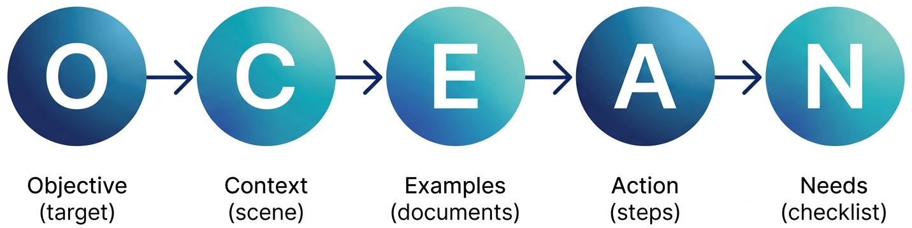

Remark
Please be aware that these lecture notes are accessible online in an ‘early access’ format. They are actively being developed, and certain sections will be further enriched to provide a comprehensive understanding of the subject matter.
3. Advanced Prompting Techniques#
Learning Objective
By the end of this section, you will be able to use Chain-of-Thought, Few-Shot Learning, and the OCEAN framework to tackle complex, high‑stakes tasks that go beyond what AIM alone can comfortably support.
In Section 1, we focused on making everyday prompts clear and well‑structured. In Part 3, we turn to tools that support deeper reasoning, pattern learning, and tighter control—the kinds of capabilities you need for dissertation chapters, publications, grant writing, and robust teaching materials.
3.1. Chain-of-Thought: “Show Your Work”#
The core idea of Chain‑of‑Thought prompting [Gadesha et al., 2026] is to ask the model to reason step by step and make its thinking explicit, rather than jumping directly to a final answer. Requesting intermediate steps reduces the chance that the model will skip over important logic and gives you a transparent reasoning trail to examine. This makes it easier to detect weak assumptions, identify calculation errors, and decide where you agree or disagree with the model’s conclusions, which is particularly useful for methodology design, study planning, and decisions that require weighing multiple criteria.
You can invoke Chain‑of‑Thought with brief directives such as “Let’s break this down step by step.”, “Think through this in stages before answering.”, or “Show your reasoning before giving a final answer.”
The examples below apply a consistent four‑step pattern to tasks you might actually delegate to an LLM: refining a research question, choosing a methodology, scaffolding a major assignment, and drafting policy language.
Example 3.1 (Refining a Research Question with Chain-of-Thought)
Instead of:
“Help me refine my research question.”
Try:
I’m studying social media effects on mental health. Think through this step by step:
Step 1: Identify what is too vague in my current question.
Step 2: Suggest how to narrow to one platform, one outcome, and one demographic.
Step 3: Propose a reasonable time frame or comparison.
Step 4: Based on that reasoning, propose 3 refined research questions.
Show your reasoning for each step before giving the final questions.
Example 3.2 (Choosing a Methodology with Chain-of-Thought)
Use this when you are deciding how to design a study.
Try:
I am deciding between a qualitative interview study and a quantitative survey for my research on [TOPIC]. Think through this step by step:
Step 1: Identify the primary strengths and trade-offs of each method for this specific topic.
Step 2: Evaluate which method better aligns with my primary research goal (e.g., explanation, prediction, understanding experience).
Step 3: Propose a potential hybrid (mixed-methods) approach that combines both.
Step 4: Based on that reasoning, recommend the most robust design for a 6-month timeline.
Show your reasoning for each step before giving the final recommendation.
Example 3.3 (Scaffolding a Major Assignment with Chain-of-Thought)
Use this to break a large assignment into manageable pieces.
Try:
I want to turn a 20-page term paper into a series of smaller, scaffolded assignments. Think through this step by step:
Step 1: Identify the 3 most difficult technical skills students need to finish the final paper.
Step 2: Propose a low-stakes pre-writing task for each of those skills.
Step 3: Determine a logical sequence for these tasks across a 15-week semester.
Step 4: Based on that reasoning, draft a brief “Roadmap to the Final Paper” that I can include in the syllabus.
Show your reasoning for each step before giving the final roadmap.
Example 3.4 (Drafting Policy Language with Chain-of-Thought)
Use this for administrative or governance work.
Try:
We are drafting a new policy for [e.g., AI use in the lab]. Think through this step by step:
Step 1: Identify the 2 biggest friction points where students and faculty might disagree.
Step 2: Suggest a middle-ground language that addresses the concerns of both groups.
Step 3: Propose a clear process for how exceptions to this policy will be handled.
Step 4: Based on that reasoning, draft a 3-paragraph “Statement of Purpose” for the policy.
Show your reasoning for each step before giving the final statement.
The “Step 0” Advantage
For high-stakes academic tasks, consider adding a Step 0: Bias & Limitation Check.
Prompt Fragment: “Step 0: Before beginning the reasoning steps, identify two potential biases or common misconceptions an AI might have regarding this specific research topic.”
Why: This forces the model to “self-audit” its training data’s leanings before it generates your methodology or policy.
3.1.1. Why This Four-Step Pattern Works#
This simple four‑step structure gives the model an internal logic to follow:
Forces deliberation. Numbered steps discourage the model from skipping ahead; it must slow down and address each part of the problem.
Supports verification. If you disagree with Step 2, you can interrupt, correct the reasoning, and re‑run the prompt before the model spends effort drafting a full answer in Step 4.
Improves alignment. By separating diagnosis (Steps 1–2) from solutions (Steps 3–4), you make it more likely that the final output matches your actual constraints and goals.
When to Use Chain-of-Thought
Designing or comparing methodological options
Planning data analysis workflows
Refining research questions or study scope
Making decisions with multiple, competing criteria
Breaking large, complex tasks into clear intermediate steps
3.2. Few-Shot Learning: The Power of Examples#
The core idea of Few‑Shot Learning [Brown et al., 2020, Gadesha, 2026] is to show the model several input–output examples so it can infer the pattern and then apply it to new cases. Instead of describing a coding scheme or format in abstract terms, you demonstrate what “good” looks like a few times and then ask the model to continue the pattern. This is especially helpful for tasks like qualitative coding, literature screening, structured data extraction, and enforcing a consistent writing style.
A simple pattern is:
Here are examples of what I want:
Example 1: [input] → [output]
Example 2: [input] → [output]
Example 3: [input] → [output]
Now do the same for: [new input]
Example 3.5 (Qualitative Coding with Few-Shot Learning)
Try:
Learn from these examples:
Text: “I feel constantly behind on my work.”
Code: TIME_PRESSUREText: “My supervisor expects me to know things I was never taught.”
Code: EXPECTATION_MISMATCHText: “No one in my cohort shares my research interests.”
Code: ISOLATIONNow code: “I’m worried my committee has conflicting dissertation expectations.”
Explain your choice in one sentence.
Example 3.6 (Literature Screening with Few-Shot Learning)
Use this to train the model on your own definition of “relevant” for a literature review.
Role: You are a research librarian assisting with a systematic literature review.
Task: I am writing a review on remote work and productivity. Learn from these classification examples:
Input: “The impact of remote work on employee productivity during 2020–2023.”
Output: RelevantInput: “Office design and workspace productivity.”
Output: Not RelevantInput: “Work-from-home policies and performance outcomes in tech companies.”
Output: RelevantInput: “Productivity software tools for project management.”
Output: Not RelevantNow classify this title: “Telecommuting and job satisfaction: A survey of remote workers.”
Decision: Is this relevant or not relevant? Provide your reasoning based on the patterns above.
Example 3.7 (Feedback Calibration with Few-Shot Learning)
Use this to keep formative feedback consistent across many students.
Role: You are a teaching assistant helping me provide consistent, constructive feedback on student reflection papers.
Task: Learn from my preferred feedback style (brief, encouraging, and focused on “connecting theory to practice”):
Student Text: “I really liked the reading about cognitive load.”
Feedback: Great start! To improve, can you identify one specific “bottleneck” from your own classroom experience that illustrates this theory?Student Text: “The lecture on motivation was very interesting for my future career.”
Feedback: I’m glad it resonated. Try to link one specific motivational framework (like Self‑Determination Theory) to a challenge you anticipate in your first year of teaching.Now provide feedback for this student text:
“I learned a lot about how to manage a classroom by watching the video case study.”Draft Feedback: [Insert output here]
Example 3.8 (Drafting Committee Announcements with Few-Shot Learning)
Use this when you want formal but approachable announcements for departmental service.
Context: I often need to send brief updates or invitations on behalf of a committee (e.g., search, curriculum, events) and want a consistent, professional tone.
Learn from these examples:
Purpose: Invite faculty to a candidate’s teaching talk
Announcement: The Search Committee invites you to attend Dr. D’s teaching demonstration on Tuesday at 2:00 p.m. in 203 Townsend. Your feedback will play an important role in our hiring decision.Purpose: Share a reminder about a curriculum listening session
Announcement: The Curriculum Committee will host a listening session on proposed changes to the core sequence this Friday at noon. All faculty are welcome; we especially encourage colleagues who teach required courses to attend.Now draft an announcement for this purpose:
Invite faculty and graduate students to a town hall on long‑term space planning for labs and offices next month.Draft Announcement: [Insert output here]
To get reliable results with Few‑Shot Learning, keep a few best practices in mind: use 2–5 examples (too few and the pattern is unclear; too many and you waste tokens), choose diverse but representative cases, ensure your examples are high quality, and keep your labels and formats clear and consistent.
When to Use Few-Shot
Qualitative coding or theme labeling
Literature screening (relevant vs. not relevant)
Structured data extraction into a fixed template
Enforcing a particular format or feedback style
Custom classification problems in your discipline
Use Clear Delimiters
When providing examples, use consistent symbols like ### or --- to separate your examples from the final task. This helps the model distinguish between the “training data” you are giving it and the “active request.”
Example:
Example 1: [Text] -> [Output]
---
Example 2: [Text] -> [Output]
---
Now do this: [Text]
3.3. OCEAN Framework: Precision for High‑Stakes Work#
The OCEAN framework [theMITmonk, 2023] is designed for situations where you need fine‑grained control over structure, tone, and constraints—dissertation chapters, manuscripts, grant sections, and assessment tools. Where AIM is usually enough for everyday prompting, OCEAN adds more “dials” so you can specify not only what you want, but also the background, pattern, process, and non‑negotiable requirements.
O — Objective: What exactly should this output achieve?
C — Context: What background, audience, and constraints matter?
E — Examples: What does a “good” version look like in your field?
A — Action: What should the model actually do, step by step?
N — Needs: Word limits, formatting rules, citation style, and other constraints.
{kind=link}

Fig. 3.1 The OCEAN framework: objective, context, examples, action, and needs working together to control high‑stakes outputs. (Image generated using Google Gemini).#
OCEAN vs. AIM
Use AIM for daily tasks, exploratory work, and quick iterations.
Use OCEAN for dissertations, publications, grants, rubrics, and any task that requires precise structure and formatting.
Think of AIM as an everyday tool and OCEAN as a precision instrument for high‑stakes work.
Example 3.9 (Rubric and Assessment Design with OCEAN)
O – Objective: Create a detailed analytic rubric for a 20‑page senior capstone project.
C – Context: Students are graduating seniors in [MAJOR]. The capstone involves original data collection and a substantial literature review. The rubric must clearly distinguish between Proficient and Exemplary performance.
E – Examples: Use a 4‑point scale—Exemplary, Proficient, Developing, Beginning—modeled on widely used VALUE‑style rubrics.
A – Action:
Define five criteria: Thesis Clarity, Methodological Rigor, Synthesis of Sources, Writing Quality, and Citations.
For each criterion, write specific performance descriptors for all four levels in the 4×5 grid.
Draft a three‑sentence “Summary Feedback” template that instructors can adapt at the bottom of the rubric.
N – Needs:
Tabular format suitable for Markdown.
Emphasize critical thinking and integration over surface‑level formatting in the descriptors and implied weighting.
Language that is clear enough for students to understand without additional explanation.
3.4. Combining Techniques#
The strongest prompts often layer techniques: a framework (AIM or OCEAN) for structure, Chain‑of‑Thought for reasoning, and Few‑Shot examples for format and style.
Example 3.10 (Creating a Rubric (CoT + Few-Shot + OCEAN))
Use this when you want a high‑quality rubric and also want to see how the model thinks about each criterion.
O – Objective: Create a rubric for master’s thesis proposals in educational psychology with 5 criteria and 4 performance levels each.
C – Context: The program emphasizes integration of theory and practice. Students often struggle with research question clarity and methodological alignment. Faculty want consistent, transparent evaluation standards.
E – Examples (Few-Shot): Here is the format for one criterion:
Research Question Quality
Excellent (4): Specific, researchable, clearly derived from a documented literature gap; appropriate scope.
Proficient (3): Clear with minor specificity issues; connection to literature is present.
Developing (2): Vague or too broad; weak or implicit literature connection.
Beginning (1): Absent, unclear, or inappropriate for the proposed study.
Follow this pattern for all criteria.
A – Action (with Chain-of-Thought):
For each criterion:
Think through what distinguishes excellent work in this area.
Identify common student difficulties.
Draft clear, observable descriptors for levels 4, 3, 2, and 1.
Show your reasoning for the first two criteria before finalizing the rubric.
N – Needs:
Five criteria: Research Question, Literature Review, Methodology, Feasibility, Writing Quality.
Four levels each (1–4) labeled: Excellent, Proficient, Developing, Beginning.
Descriptors must be specific and observable.
Present the final rubric in table form suitable for pasting into a syllabus or LMS.
Why combine these?
Chain‑of‑Thought encourages thoughtful development of each criterion.
Few‑Shot examples lock in the exact format and tone you want.
OCEAN ensures the rubric aligns with program goals and practical constraints.
3.5. Practice Exercise#
Choose one real task from your own work and design a prompt that uses at least two advanced techniques:
Drafting or revising a methods section
Creating discussion questions for a specific class session
Analyzing interview transcripts for themes
Requirements:
Combine techniques (e.g., CoT + Few‑Shot, or Few‑Shot + OCEAN).
Provide enough context for your setting and audience.
Specify the desired output format (bullets, table, narrative, etc.).
Key Takeaway
For complex academic tasks, think in layers: use a framework (AIM or OCEAN) to define the task, add Chain‑of‑Thought for reasoning, and include Few‑Shot examples to enforce the desired pattern and format.